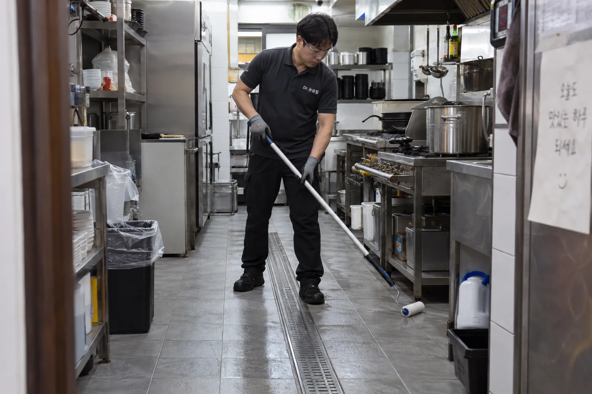

뜨거운 음식을 든 손.
발밑까지 챙길 수 있을까요?
한 번의 미끄러짐은 직원의 부상과 손님의 피해로 이어질 수 있습니다.
물기가 생기는 조리·세척·배식 동선의 바닥부터 개선하세요.

바쁜 주방에 필요한 건,
덜 미끄러운 바닥입니다.
기존 타일·석재 표면을 처리해 젖은 바닥의 미끄럼 저항을 높입니다. 직원이 서서 일하는 곳부터 음식을 나르는 길까지, 필요한 구역에 시공합니다.
- 직원의 작업 동선
- 조리대 앞, 세척 구역, 배식 통로의 미끄러움 개선.
- 기존 바닥 그대로
- 적합한 타일·석재는 철거·교체 없이 표면을 처리.
- 매장에 맞춘 작업
- 마감 후·휴무일·구역별 시공으로 영업 일정에 맞춰 진행.
설거지하는 곳, 음식을 나르는 길.
가장 미끄러운 구역부터.
작은 매장도, 넓은 주방도 시공합니다. 실제 바닥의 작은 구역에서 먼저 변화를 보고, 직원과 손님이 걷는 범위에 맞춰 본 시공을 선택하세요. 주방 환경에 맞는 청소 방법도 함께 안내합니다.
식당·주방 방문 상담사진은 시공 과정과 적용 공간을 설명하기 위한 브랜드 이미지입니다.